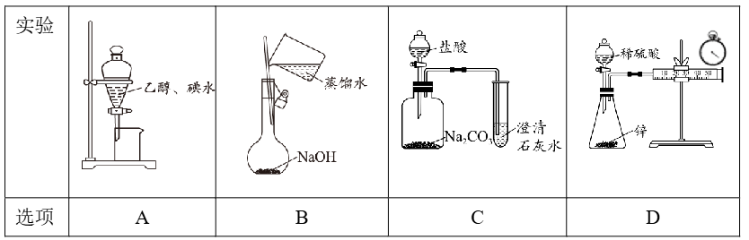
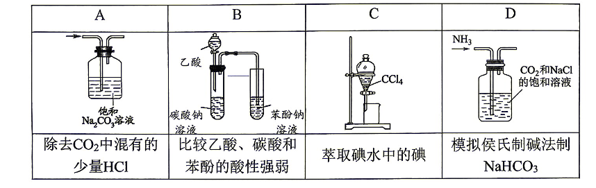
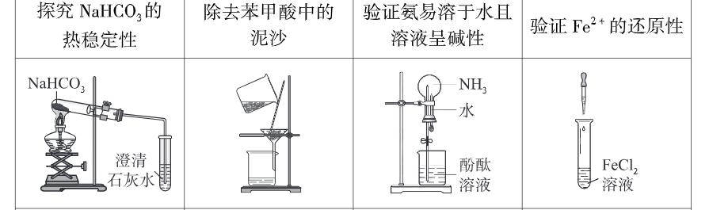
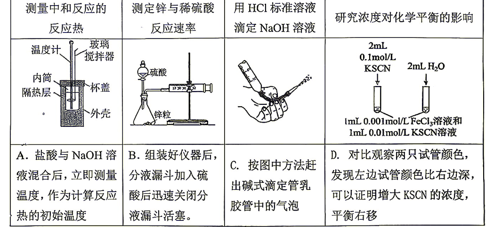

<meta data-alternate="https://freshmark.sunisalex.org/en/" data-article="true" data-canonical="https://freshmark.sunisalex.org/posts/chemistry/chemistry-experiment-operations/" data-description="精选 2026 北京海淀、朝阳、育才、十五中、一六一中化学期中试卷中的实验操作相关题目，含装置目的判断、操作顺序、试剂与器材选择及综合实验大题；题目在前，参考答案与解析附于文末。" data-freshmark-page data-title="[专题练习] 高中化学实验操作精选（装置判断·操作顺序·器材选择） — Freshmark"><main><header class="container article-header"><a href="/" class="back-link">← 返回全部文章</a><p class="eyebrow article-subject">化学</p><h1>[专题练习] 高中化学实验操作精选（装置判断·操作顺序·器材选择）</h1><p class="article-dek">精选 2026 北京海淀、朝阳、育才、十五中、一六一中化学期中试卷中的实验操作相关题目，含装置目的判断、操作顺序、试剂与器材选择及综合实验大题；题目在前，参考答案与解析附于文末。</p><div class="article-meta"><time datetime="2026-11-21">2026年11月21日</time><span>7 分钟阅读</span><span>化学 · 化学实验 · 一轮复习</span><span class="view-count" data-article-view-count hidden>本文访问量 <strong data-article-views></strong></span><a href="index.md" download>下载 Markdown</a><button type="button" class="article-share" data-share-article data-share-text="精选 2026 北京海淀、朝阳、育才、十五中、一六一中化学期中试卷中的实验操作相关题目，含装置目的判断、操作顺序、试剂与器材选择及综合实验大题；题目在前，参考答案与解析附于文末。" data-share-title="[专题练习] 高中化学实验操作精选（装置判断·操作顺序·器材选择）"><span data-share-label>分享文章</span></button><output aria-live="polite" class="visually-hidden" data-share-status role="status"></output></div></header><div class="article-wrap"><aside class="toc"><div class="toc-head"><p>本文目录</p><button type="button" class="toc-toggle" aria-expanded="false" aria-label="展开或收起目录" data-toc-toggle><span class="toc-toggle-label">目录</span><span class="toc-toggle-icon" aria-hidden="true"></span></button></div><nav aria-label="目录" class="toc-links" data-toc-links><a href="#一判断实验装置能否达到目的" class="toc-level-2">一、判断实验装置能否达到目的</a><a href="#1-2026-北京海淀高三上期中第-5-题" class="toc-level-3">1. （2026 北京海淀高三上期中·第 5 题）</a><a href="#2-2026-北京十五中高三上期中第-5-题" class="toc-level-3">2. （2026 北京十五中高三上期中·第 5 题）</a><a href="#3-2026-北京朝阳高三上期中第-8-题" class="toc-level-3">3. （2026 北京朝阳高三上期中·第 8 题）</a><a href="#二实验操作规范与操作顺序" class="toc-level-2">二、实验操作规范与操作顺序</a><a href="#4-2026-北京朝阳高三上期中第-10-题" class="toc-level-3">4. （2026 北京朝阳高三上期中·第 10 题）</a><a href="#5-2026-北京育才学校高三上期中第-2-题" class="toc-level-3">5. （2026 北京育才学校高三上期中·第 2 题）</a><a href="#6-20252026-北京一六一中高二化学第-5-题" class="toc-level-3">6. （2025—2026 北京一六一中高二化学·第 5 题）</a><a href="#7-20252026-北京一六一中高二化学第-8-题" class="toc-level-3">7. （2025—2026 北京一六一中高二化学·第 8 题）</a><a href="#三实验安全试剂与器材选择" class="toc-level-2">三、实验安全、试剂与器材选择</a><a href="#8-2026-北京朝阳高三上期中第-5-题" class="toc-level-3">8. （2026 北京朝阳高三上期中·第 5 题）</a><a href="#9-2026-北京朝阳高三上期中第-6-题" class="toc-level-3">9. （2026 北京朝阳高三上期中·第 6 题）</a><a href="#10-2026-北京育才学校高三上期中第-3-题" class="toc-level-3">10. （2026 北京育才学校高三上期中·第 3 题）</a><a href="#四综合实验操作与流程探究大题" class="toc-level-2">四、综合实验操作与流程探究（大题）</a><a href="#11-2026-北京朝阳高三上期中第-16-题12-分" class="toc-level-3">11. （2026 北京朝阳高三上期中·第 16 题，12 分）</a><a href="#12-2026-北京海淀高三上期中第-19-题13-分" class="toc-level-3">12. （2026 北京海淀高三上期中·第 19 题，13 分）</a><a href="#参考答案与解析" class="toc-level-1">参考答案与解析</a><a href="#第-1-题2026-海淀高三期中第-5-题" class="toc-level-2">第 1 题（2026 海淀高三期中·第 5 题）</a><a href="#第-2-题2026-十五中高三期中第-5-题" class="toc-level-2">第 2 题（2026 十五中高三期中·第 5 题）</a><a href="#第-3-题2026-朝阳高三期中第-8-题" class="toc-level-2">第 3 题（2026 朝阳高三期中·第 8 题）</a><a href="#第-4-题2026-朝阳高三期中第-10-题" class="toc-level-2">第 4 题（2026 朝阳高三期中·第 10 题）</a><a href="#第-5-题2026-育才高三期中第-2-题" class="toc-level-2">第 5 题（2026 育才高三期中·第 2 题）</a><a href="#第-6-题20252026-一六一中高二第-5-题" class="toc-level-2">第 6 题（2025—2026 一六一中高二·第 5 题）</a><a href="#第-7-题20252026-一六一中高二第-8-题" class="toc-level-2">第 7 题（2025—2026 一六一中高二·第 8 题）</a><a href="#第-8-题2026-朝阳高三期中第-5-题" class="toc-level-2">第 8 题（2026 朝阳高三期中·第 5 题）</a><a href="#第-9-题2026-朝阳高三期中第-6-题" class="toc-level-2">第 9 题（2026 朝阳高三期中·第 6 题）</a><a href="#第-10-题2026-育才高三期中第-3-题" class="toc-level-2">第 10 题（2026 育才高三期中·第 3 题）</a><a href="#第-11-题2026-朝阳高三期中第-16-题" class="toc-level-2">第 11 题（2026 朝阳高三期中·第 16 题）</a><a href="#第-12-题2026-海淀高三期中第-19-题" class="toc-level-2">第 12 题（2026 海淀高三期中·第 19 题）</a><a href="#批注与补充" class="toc-level-1">批注与补充</a></nav></aside><article class="prose"><blockquote><p>本专题整理自 2026 年 11 月北京海淀、朝阳、育才学校、十五中、一六一中高中化学期中试卷，聚焦<strong>判断装置能否达到目的、实验操作顺序、试剂与器材选择</strong>等高频实验操作题。<strong>前半部分仅保留题目与图示，参考答案与解析统一附于文末。</strong></p></blockquote><hr><h2 id="一判断实验装置能否达到目的">一、判断实验装置能否达到目的</h2><h3 id="1-2026-北京海淀高三上期中第-5-题">1. （2026 北京海淀高三上期中·第 5 题）</h3><p>下列实验中，能达到实验目的的是（ ）</p><div class="table-wrap" tabindex="0"><table><thead><tr><th>选项</th><th>A</th><th>B</th><th>C</th><th>D</th></tr></thead><tbody><tr><td>目的</td><td>萃取碘水中的碘</td><td>配制 <span class="math-expression math-inline" data-math-source="100\text{ mL } 0.1\text{ mol/L NaOH}"></span>&#32;溶液</td><td>比较 <span class="math-expression math-inline" data-math-source="\text{Cl}"></span>、<span class="math-expression math-inline" data-math-source="\text{C}"></span>&#32;的非金属性强弱</td><td>测定锌与稀硫酸反应的速率</td></tr></tbody></table></div><p><picture class="responsive-picture"><source srcset="q-200208-5-apparatus.freshmark-2b08d921fcdd-480w.avif 480w, q-200208-5-apparatus.freshmark-2b08d921fcdd-834w.avif 834w" type="image/avif"><source srcset="q-200208-5-apparatus.freshmark-2b08d921fcdd-480w.webp 480w, q-200208-5-apparatus.freshmark-2b08d921fcdd-834w.webp 834w" type="image/webp"></picture>正确答案:D</p><p>A: 乙醇和水混溶，无法萃取水中的碘单质</p><p>B:容量瓶不可用于溶解<sup><a href="#fn-1" id="fnref-1">[1]</a></sup></p><p>C:应比较最高价氧化物水化物<span class="math-expression math-inline" data-math-source="\ce{HClO4,H2CO3}"></span>酸性</p><p>D:单位时间产生气体体积反映反应速率</p><hr><h3 id="2-2026-北京十五中高三上期中第-5-题">2. （2026 北京十五中高三上期中·第 5 题）</h3><p>下列实验，能达到实验目的的是（ ）</p><p><picture class="responsive-picture"><source srcset="q-201223-5-apparatus.freshmark-b421b1312abc-480w.avif 480w, q-201223-5-apparatus.freshmark-b421b1312abc-858w.avif 858w" type="image/avif"><source srcset="q-201223-5-apparatus.freshmark-b421b1312abc-480w.webp 480w, q-201223-5-apparatus.freshmark-b421b1312abc-858w.webp 858w" type="image/webp"></picture>正确答案:C</p><p>A:洗气瓶里应使用饱和<span class="math-expression math-inline" data-math-source="\ce{NaHCO3}"></span>溶液</p><p>B:乙酸有挥发性，应用饱和<span class="math-expression math-inline" data-math-source="\ce{NaHCO3}"></span>溶液洗气<sup><a href="#fn-2" id="fnref-2">[2]</a></sup></p><p>D:应该先通<span class="math-expression math-inline" data-math-source="\ce{NH3}"></span>再通<span class="math-expression math-inline" data-math-source="\ce{CO2}"></span>，以增加<span class="math-expression math-inline" data-math-source="\ce{CO2}"></span>溶解度<sup><a href="#fn-3" id="fnref-3">[3]</a></sup></p><hr><h3 id="3-2026-北京朝阳高三上期中第-8-题">3. （2026 北京朝阳高三上期中·第 8 题）</h3><p>饱和氯水存在：<span class="math-expression math-inline" data-math-source="\ce{Cl2 + H2O &lt;=&gt; HClO + H+ + Cl-}"></span>。下列说法<strong>不正确</strong>的是（ ）</p><p>A. <span class="math-expression math-inline" data-math-source="\ce{Cl2}"></span>&#32;是非极性分子，<span class="math-expression math-inline" data-math-source="\ce{H2O}"></span>&#32;是极性分子<br>B. <span class="math-expression math-inline" data-math-source="\ce{HClO}"></span>&#32;分子中 <span class="math-expression math-inline" data-math-source="\text{Cl}"></span>&#32;价电子层上的孤电子对数为 3<br>C. 可通过右图实验验证 <span class="math-expression math-inline" data-math-source="\ce{HClO}"></span>&#32;具有漂白性<br>D. 向 <span class="math-expression math-inline" data-math-source="\ce{KI}"></span>&#32;淀粉溶液中滴加少量氯水，溶液变蓝，说明 <span class="math-expression math-inline" data-math-source="\ce{Cl2}"></span>&#32;与 <span class="math-expression math-inline" data-math-source="\ce{H2O}"></span>&#32;的反应存在限度</p><p><picture class="responsive-picture"><source srcset="q-200339-8-apparatus.freshmark-ee15a6471184-354w.avif 354w" type="image/avif"><source srcset="q-200339-8-apparatus.freshmark-ee15a6471184-354w.webp 354w" type="image/webp"></picture>正确答案:D</p><p>D:假设<span class="math-expression math-inline" data-math-source="\ce{Cl2}"></span>完全转换，生成的<span class="math-expression math-inline" data-math-source="\ce{HClO}"></span>同样可以氧化<span class="math-expression math-inline" data-math-source="\ce{I-}"></span>，不能确定为可逆反应<sup><a href="#fn-4" id="fnref-4">[4]</a></sup></p><hr><h2 id="二实验操作规范与操作顺序">二、实验操作规范与操作顺序</h2><h3 id="4-2026-北京朝阳高三上期中第-10-题">4. （2026 北京朝阳高三上期中·第 10 题）</h3><p>下列实验的相应操作中，<strong>不合理</strong>的是（ ）</p><p><picture class="responsive-picture"><source srcset="q-200339-10-apparatus.freshmark-e0744ef4ee1f-480w.avif 480w, q-200339-10-apparatus.freshmark-e0744ef4ee1f-895w.avif 895w" type="image/avif"><source srcset="q-200339-10-apparatus.freshmark-e0744ef4ee1f-480w.webp 480w, q-200339-10-apparatus.freshmark-e0744ef4ee1f-895w.webp 895w" type="image/webp"></picture></p><ul><li><strong>A.</strong> 探究 <span class="math-expression math-inline" data-math-source="\ce{NaHCO3}"></span>&#32;的热稳定性：实验结束时，先把导管移出液面，再熄灭酒精灯</li><li><strong>B.</strong> 除去苯甲酸中的泥沙：先加热溶解，冷却后再过滤</li><li><strong>C.</strong> 验证氨易溶于水且溶液呈碱性：先打开弹簧夹，再挤压胶头滴管</li><li><strong>D.</strong> 验证 <span class="math-expression math-inline" data-math-source="\ce{Fe^2+}"></span>&#32;的还原性：先滴加几滴 <span class="math-expression math-inline" data-math-source="\ce{KSCN}"></span>&#32;溶液，再滴加几滴氯水</li></ul><p>正确答案:B</p><p>B:分离苯甲酸和泥沙，需要利用苯甲酸“溶解度随温度上升而上升”进行重结晶，应加热溶解，趁热过滤</p><hr><h3 id="5-2026-北京育才学校高三上期中第-2-题">5. （2026 北京育才学校高三上期中·第 2 题）</h3><p>下列实验用品的使用<strong>不规范</strong>的是（ ）</p><p>A. 用氨进行喷泉实验时，将圆底烧瓶干燥后，再收集氨气<br>B. 测溶液的 <span class="math-expression math-inline" data-math-source="\text{pH}"></span>&#32;时，将 <span class="math-expression math-inline" data-math-source="\text{pH}"></span>&#32;试纸用蒸馏水润湿后，再进行测量<br>C. 在乙醇制乙烯的实验中，将温度计插入反应混合液中，再加热<br>D. 在滴定实验中，将滴定管洗净后，再用待盛溶液润洗</p><p>正确答案:B</p><p>B:应使用干燥的pH试纸</p><hr><h3 id="6-20252026-北京一六一中高二化学第-5-题">6. （2025—2026 北京一六一中高二化学·第 5 题）</h3><p>用 <span class="math-expression math-inline" data-math-source="0.1000\text{ mol}\cdot\text{L}^{-1}\text{ HCl}"></span>&#32;溶液滴定未知浓度的 <span class="math-expression math-inline" data-math-source="\ce{NaOH}"></span>&#32;溶液。下列说法<strong>不正确</strong>的是（ ）</p><p>A. 酸式滴定管在盛装 <span class="math-expression math-inline" data-math-source="0.1000\text{ mol}\cdot\text{L}^{-1}\text{ HCl}"></span>&#32;溶液前要用该溶液润洗 <span class="math-expression math-inline" data-math-source="2\sim 3"></span>&#32;次<br>B. 锥形瓶盛装待测 <span class="math-expression math-inline" data-math-source="\ce{NaOH}"></span>&#32;溶液前须干燥<br>C. 滴定时，边摇动锥形瓶，边注视锥形瓶中溶液的颜色变化<br>D. 滴定时，若锥形瓶中有液体溅出，测定结果偏低</p><p>正确答案:B</p><p>B:锥形瓶无需干燥</p><hr><h3 id="7-20252026-北京一六一中高二化学第-8-题">7. （2025—2026 北京一六一中高二化学·第 8 题）</h3><p>下列实验操作或结论，<strong>不正确</strong>的是（ ）</p><p><picture class="responsive-picture"><source srcset="q-201410-8-apparatus.freshmark-4d08cac2d1c5-480w.avif 480w, q-201410-8-apparatus.freshmark-4d08cac2d1c5-960w.avif 960w, q-201410-8-apparatus.freshmark-4d08cac2d1c5-1032w.avif 1032w" type="image/avif"><source srcset="q-201410-8-apparatus.freshmark-4d08cac2d1c5-480w.webp 480w, q-201410-8-apparatus.freshmark-4d08cac2d1c5-960w.webp 960w, q-201410-8-apparatus.freshmark-4d08cac2d1c5-1032w.webp 1032w" type="image/webp"></picture>正确答案:A</p><p>A:盐酸，<span class="math-expression math-inline" data-math-source="\ce{NaOH}"></span>溶液体积相同，比热容近似与水相同，<span class="math-expression math-inline" data-math-source="t_0=\frac{t_{HCl}+t_{NaOH}}{2}"></span><sup><a href="#fn-5" id="fnref-5">[5]</a></sup></p><hr><h2 id="三实验安全试剂与器材选择">三、实验安全、试剂与器材选择</h2><h3 id="8-2026-北京朝阳高三上期中第-5-题">8. （2026 北京朝阳高三上期中·第 5 题）</h3><p>下列有关实验安全的说法中<strong>不合理</strong>的是（ ）</p><p>A. 做钠在空气中燃烧的实验时，不要近距离俯视坩埚<br>B. 在用电石制乙炔的实验中，将 <span class="math-expression math-inline" data-math-source="\ce{NaCl}"></span>&#32;溶液缓慢加入到圆底烧瓶时须用长颈漏斗<br>C. 实验方案中出现“当心烫伤”图标，说明实验中会遇到加热操作或用到温度较高的仪器<br>D. 中学实验室可将未用完的钠、钾、白磷等放回原试剂瓶</p><p>正确答案:B<sup><a href="#fn-6" id="fnref-6">[6]</a></sup></p><hr><h3 id="9-2026-北京朝阳高三上期中第-6-题">9. （2026 北京朝阳高三上期中·第 6 题）</h3><p>下列物质的制备实验中，选用的试剂和反应条件均正确的是（ ）</p><div class="table-wrap" tabindex="0"><table><thead><tr><th>选项</th><th>物质</th><th>试剂</th><th>反应条件</th></tr></thead><tbody><tr><td>A</td><td><span class="math-expression math-inline" data-math-source="\ce{Fe2O3}"></span></td><td><span class="math-expression math-inline" data-math-source="\ce{Fe}"></span>&#32;和水</td><td>高温</td></tr><tr><td>B</td><td><span class="math-expression math-inline" data-math-source="\ce{Cl2}"></span></td><td><span class="math-expression math-inline" data-math-source="\ce{MnO2}"></span>&#32;和稀盐酸</td><td>常温</td></tr><tr><td>C</td><td>硫酸四氨合铜溶液</td><td>硫酸铜溶液、氨水</td><td>常温</td></tr><tr><td>D</td><td><span class="math-expression math-inline" data-math-source="\ce{C2H4}"></span></td><td>乙醇和浓硫酸</td><td>加热至 <span class="math-expression math-inline" data-math-source="140\,^\circ\text{C}"></span></td></tr></tbody></table></div><p>正确答案:C</p><p>A:<span class="math-expression math-inline" data-math-source="\ce{Fe + H2O(g) \xlongequal{高温} Fe3O4 + H2}"></span><sup><a href="#fn-7" id="fnref-7">[7]</a></sup></p><p>B:需要使用浓盐酸<sup><a href="#fn-8" id="fnref-8">[8]</a></sup></p><p>D:140℃制乙醚，170℃制乙烯</p><hr><h3 id="10-2026-北京育才学校高三上期中第-3-题">10. （2026 北京育才学校高三上期中·第 3 题）</h3><p>下列物质的制备实验中，选用的试剂和反应条件均正确的是（ ）</p><div class="table-wrap" tabindex="0"><table><thead><tr><th>选项</th><th>物质</th><th>试剂</th><th>反应条件</th></tr></thead><tbody><tr><td>A</td><td><span class="math-expression math-inline" data-math-source="\ce{SO2}"></span></td><td><span class="math-expression math-inline" data-math-source="\ce{Cu}"></span>&#32;和浓硫酸</td><td>常温</td></tr><tr><td>B</td><td><span class="math-expression math-inline" data-math-source="\ce{NH3}"></span></td><td><span class="math-expression math-inline" data-math-source="\ce{NH4Cl}"></span>&#32;固体</td><td>加热</td></tr><tr><td>C</td><td>银氨溶液</td><td><span class="math-expression math-inline" data-math-source="\ce{AgNO3}"></span>&#32;溶液和氨水</td><td>常温</td></tr><tr><td>D</td><td><span class="math-expression math-inline" data-math-source="\ce{Cl2}"></span></td><td><span class="math-expression math-inline" data-math-source="\ce{MnO2}"></span>&#32;固体和稀盐酸</td><td>加热</td></tr></tbody></table></div><p>正确答案:C</p><p>A:需要加热</p><p>B:不单独用<span class="math-expression math-inline" data-math-source="\ce{NH4Cl}"></span>&#32;固体</p><p>D:需要浓盐酸</p><hr><h2 id="四综合实验操作与流程探究大题">四、综合实验操作与流程探究（大题）</h2><h3 id="11-2026-北京朝阳高三上期中第-16-题12-分">11. （2026 北京朝阳高三上期中·第 16 题，12 分）</h3><p>除去粗盐中的杂质离子 <span class="math-expression math-inline" data-math-source="\ce{Ca^2+}"></span>、<span class="math-expression math-inline" data-math-source="\ce{Mg^2+}"></span>&#32;和 <span class="math-expression math-inline" data-math-source="\ce{SO4^2-}"></span>，流程示意图如下。</p><p><picture class="responsive-picture"><source srcset="q-200339-16-flow.freshmark-bc257db6ace6-480w.avif 480w, q-200339-16-flow.freshmark-bc257db6ace6-861w.avif 861w" type="image/avif"><source srcset="q-200339-16-flow.freshmark-bc257db6ace6-480w.webp 480w, q-200339-16-flow.freshmark-bc257db6ace6-861w.webp 861w" type="image/webp"></picture></p><p>已知：</p><ol><li>难溶电解质的 <span class="math-expression math-inline" data-math-source="K_{\text{sp}}"></span>：<span class="math-expression math-inline" data-math-source="\ce{BaSO4}: 1.1\times 10^{-10}"></span>，<span class="math-expression math-inline" data-math-source="\ce{BaCO3}: 2.6\times 10^{-9}"></span>，<span class="math-expression math-inline" data-math-source="\ce{Mg(OH)2}: 5.6\times 10^{-12}"></span>，<span class="math-expression math-inline" data-math-source="\ce{CaCO3}: 3.4\times 10^{-9}"></span>，<span class="math-expression math-inline" data-math-source="\ce{Ca(OH)2}: 4.7\times 10^{-6}"></span>。</li><li>当溶液中的离子浓度小于 <span class="math-expression math-inline" data-math-source="1\times 10^{-5}\text{ mol/L}"></span>&#32;时，认为沉淀完全。</li></ol><p>请回答：</p><ol><li><span class="math-expression math-inline" data-math-source="\text{i}"></span>&#32;中发生反应的离子方程式是____________。</li><li><span class="math-expression math-inline" data-math-source="\text{i}"></span>&#32;中需加入过量的 <span class="math-expression math-inline" data-math-source="\ce{BaCl2}"></span>，检测 <span class="math-expression math-inline" data-math-source="\ce{BaCl2}"></span>&#32;是否过量的方法是____________。</li><li>若加入 <span class="math-expression math-inline" data-math-source="\ce{BaCl2}"></span>&#32;后不过滤就加入 <span class="math-expression math-inline" data-math-source="\ce{NaOH}"></span>、饱和 <span class="math-expression math-inline" data-math-source="\ce{Na2CO3}"></span>&#32;溶液，会导致提纯后的精盐中存在 <span class="math-expression math-inline" data-math-source="\ce{SO4^2-}"></span>，结合沉淀溶解平衡说明原因：____________。</li><li>若 <span class="math-expression math-inline" data-math-source="\text{ii}"></span>&#32;中只用 <span class="math-expression math-inline" data-math-source="6\text{ mol/L NaOH}"></span>&#32;溶液除去 <span class="math-expression math-inline" data-math-source="\ce{Ca^2+}"></span>、<span class="math-expression math-inline" data-math-source="\ce{Mg^2+}"></span>，会导致____________（填字母）。<br>a. <span class="math-expression math-inline" data-math-source="\ce{Ca^2+}"></span>&#32;沉淀不完全　　b. 消耗更多 <span class="math-expression math-inline" data-math-source="\ce{NaOH}"></span>　　c. 步骤 <span class="math-expression math-inline" data-math-source="\text{iii}"></span>&#32;中会消耗更多的盐酸</li><li>按图示流程，滤渣 2 的主要成分有____________。</li><li><span class="math-expression math-inline" data-math-source="\text{iii}"></span>&#32;中向烧杯中加入盐酸，使溶液 <span class="math-expression math-inline" data-math-source="\text{c}"></span>&#32;呈弱酸性。<span class="math-expression math-inline" data-math-source="\text{iv}"></span>&#32;中“系列操作”的步骤是：<br>① 将溶液 <span class="math-expression math-inline" data-math-source="\text{c}"></span>&#32;转移至<strong><strong><strong><strong><strong><strong>中；<br>② 用酒精灯加热，</strong></strong></strong></strong></strong></strong>，停止加热。</li><li>测量发现，精盐中 <span class="math-expression math-inline" data-math-source="\ce{NaCl}"></span>&#32;的质量大于原粗盐中 <span class="math-expression math-inline" data-math-source="\ce{NaCl}"></span>&#32;的质量，原因是____________。</li></ol><p>（2）静置后，沿烧杯壁向上层清液中继续滴加 <span class="math-expression math-inline" data-math-source="2\sim 3"></span>&#32;滴 <span class="math-expression math-inline" data-math-source="\ce{BaCl2}"></span>&#32;溶液。若溶液不出现浑浊，则表明 <span class="math-expression math-inline" data-math-source="\ce{SO4^2-}"></span>&#32;已沉淀完全，<span class="math-expression math-inline" data-math-source="\ce{BaCl2}"></span>&#32;过量。</p><hr><h3 id="12-2026-北京海淀高三上期中第-19-题13-分">12. （2026 北京海淀高三上期中·第 19 题，13 分）</h3><p>实验小组研究 <span class="math-expression math-inline" data-math-source="\ce{SO2}"></span>&#32;与 <span class="math-expression math-inline" data-math-source="\ce{MnO2}"></span>&#32;的反应。</p><p><strong>【实验 1】</strong> 实验装置如下（夹持装置、A 中加热装置和 C 中冷却装置已略去）。实验结束后，C 中黑色悬浊液最终变澄清，且几乎无色。</p><p><picture class="responsive-picture"><source srcset="q-200208-19-apparatus.freshmark-22c4ffa78bea-480w.avif 480w, q-200208-19-apparatus.freshmark-22c4ffa78bea-812w.avif 812w" type="image/avif"><source srcset="q-200208-19-apparatus.freshmark-22c4ffa78bea-480w.webp 480w, q-200208-19-apparatus.freshmark-22c4ffa78bea-812w.webp 812w" type="image/webp"></picture></p><ol><li>A 中发生反应的化学方程式是____________。</li><li>将除杂装置 B 补充完整并标明所用试剂。</li></ol><p><strong>【实验 2】</strong> 为探究 <span class="math-expression math-inline" data-math-source="\ce{SO2}"></span>&#32;与 <span class="math-expression math-inline" data-math-source="\ce{MnO2}"></span>&#32;的反应产物，实验小组取 C 中溶液，通过加热、抽气除去 <span class="math-expression math-inline" data-math-source="\ce{SO2}"></span>&#32;后进行下列实验。</p><p><picture class="responsive-picture"><source srcset="q-200208-19-flow.freshmark-47f4e19c5e43-480w.avif 480w, q-200208-19-flow.freshmark-47f4e19c5e43-615w.avif 615w" type="image/avif"><source srcset="q-200208-19-flow.freshmark-47f4e19c5e43-480w.webp 480w, q-200208-19-flow.freshmark-47f4e19c5e43-615w.webp 615w" type="image/webp"></picture></p><p>后续实验证实：沉淀 1 为 <span class="math-expression math-inline" data-math-source="\ce{BaSO4}"></span>，沉淀 2 中含有 <span class="math-expression math-inline" data-math-source="\ce{BaCO3}"></span>、<span class="math-expression math-inline" data-math-source="\ce{MnCO3}"></span>。</p><ol start="3"><li>根据以上实验，推测 <span class="math-expression math-inline" data-math-source="\ce{SO2}"></span>&#32;与 <span class="math-expression math-inline" data-math-source="\ce{MnO2}"></span>&#32;反应的化学方程式____________。</li><li>验证溶液 1 中 <span class="math-expression math-inline" data-math-source="\ce{Ba^2+}"></span>、<span class="math-expression math-inline" data-math-source="\ce{Mn^2+}"></span>&#32;已沉淀完全的实验方法：静置后，沿器壁向上层清液中滴加 <span class="math-expression math-inline" data-math-source="2\sim 3"></span>&#32;滴____________（填试剂），若溶液不出现浑浊，则说明已沉淀完全。</li></ol><p><strong>【实验 3】</strong> 为验证溶液 2 的成分，将溶液 2 蒸干，获得白色粉末，同时产生刺激性气味气体。进一步实验证明白色粉末中含 <span class="math-expression math-inline" data-math-source="\ce{SO4^2-}"></span>，刺激性气味气体中含 <span class="math-expression math-inline" data-math-source="\ce{SO2}"></span>。</p><ol start="5"><li>证明白色粉末中含 <span class="math-expression math-inline" data-math-source="\ce{SO4^2-}"></span>&#32;的实验方法是____________。</li><li>根据实验 3，推测溶液 2 中存在____________（填序号）。<br>a. <span class="math-expression math-inline" data-math-source="\ce{S2O3^2-}"></span>　　b. <span class="math-expression math-inline" data-math-source="\ce{SO3^2-}"></span>　　c. <span class="math-expression math-inline" data-math-source="\ce{S2O6^2-}"></span>　　d. <span class="math-expression math-inline" data-math-source="\ce{SO4^2-}"></span></li><li>实验小组反思：若未将 C 中 <span class="math-expression math-inline" data-math-source="\ce{SO2}"></span>&#32;去除，溶液 2 蒸干后得到的白色粉末中的 <span class="math-expression math-inline" data-math-source="\ce{SO4^2-}"></span>&#32;可能来源于 <span class="math-expression math-inline" data-math-source="\ce{SO2}"></span>。你是否同意该观点，说明理由：____________。</li></ol><p>（4）<span class="math-expression math-inline" data-math-source="\ce{Na2CO3}"></span>溶液 （5）取少量白色粉末于试管中，加入足量稀盐酸，再滴加 <span class="math-expression math-inline" data-math-source="\ce{BaCl2}"></span>&#32;溶液，产生白色沉淀。</p><hr><h1 id="参考答案与解析">参考答案与解析</h1><h2 id="第-1-题2026-海淀高三期中第-5-题">第 1 题（2026 海淀高三期中·第 5 题）</h2><p><strong>答案：D</strong></p><ul><li><strong>A 错误</strong>：乙醇与水互溶，不能作萃取碘水中碘的萃取剂（应选 <span class="math-expression math-inline" data-math-source="\ce{CCl4}"></span>&#32;或苯等与水不互溶的溶剂）。</li><li><strong>B 错误</strong>：配制一定物质的量浓度溶液时，固体 <span class="math-expression math-inline" data-math-source="\ce{NaOH}"></span>&#32;应在<strong>烧杯</strong>中溶解并冷却至室温，再转移至容量瓶中，不能直接在容量瓶中溶解。</li><li><strong>C 错误</strong>：盐酸具有挥发性且不是 <span class="math-expression math-inline" data-math-source="\text{Cl}"></span>&#32;的最高价含氧酸，一方面无法用 <span class="math-expression math-inline" data-math-source="\ce{HCl}"></span>&#32;与 <span class="math-expression math-inline" data-math-source="\ce{H2CO3}"></span>&#32;的酸性比较 <span class="math-expression math-inline" data-math-source="\text{Cl}"></span>、<span class="math-expression math-inline" data-math-source="\text{C}"></span>&#32;的非金属性，另一方面挥发出的 <span class="math-expression math-inline" data-math-source="\ce{HCl}"></span>&#32;也会与澄清石灰水反应。</li><li><strong>D 正确</strong>：利用分液漏斗控制稀硫酸加入，通过注射器测定一定时间内收集到 <span class="math-expression math-inline" data-math-source="\ce{H2}"></span>&#32;的体积（配合秒表计时），可测定锌与稀硫酸的反应速率。</li></ul><hr><h2 id="第-2-题2026-十五中高三期中第-5-题">第 2 题（2026 十五中高三期中·第 5 题）</h2><p><strong>答案：C</strong></p><ul><li><strong>A 错误</strong>：饱和 <span class="math-expression math-inline" data-math-source="\ce{Na2CO3}"></span>&#32;溶液不仅吸收 <span class="math-expression math-inline" data-math-source="\ce{HCl}"></span>，还会与 <span class="math-expression math-inline" data-math-source="\ce{CO2}"></span>&#32;反应（<span class="math-expression math-inline" data-math-source="\ce{CO2 + Na2CO3 + H2O = 2NaHCO3}"></span>），应改用<strong>饱和 <span class="math-expression math-inline" data-math-source="\ce{NaHCO3}"></span>&#32;溶液</strong>。</li><li><strong>B 错误</strong>：乙酸易挥发，挥发出的乙酸蒸气会直接进入苯酚钠溶液使其变浑浊，干扰碳酸与苯酚酸性的比较（中间缺少除杂装置）。</li><li><strong>C 正确</strong>：<span class="math-expression math-inline" data-math-source="\ce{CCl4}"></span>&#32;与水不互溶且碘在 <span class="math-expression math-inline" data-math-source="\ce{CCl4}"></span>&#32;中的溶解度远大于在水中，可用分液漏斗萃取碘水中的碘。</li><li><strong>D 错误</strong>：模拟侯氏制碱法时，由于 <span class="math-expression math-inline" data-math-source="\ce{NH3}"></span>&#32;极易溶于水，通入 <span class="math-expression math-inline" data-math-source="\ce{NH3}"></span>&#32;的导管直接插入液面以下会发生<strong>倒吸</strong>（且应先通 <span class="math-expression math-inline" data-math-source="\ce{NH3}"></span>&#32;至饱和后再通 <span class="math-expression math-inline" data-math-source="\ce{CO2}"></span>）。</li></ul><hr><h2 id="第-3-题2026-朝阳高三期中第-8-题">第 3 题（2026 朝阳高三期中·第 8 题）</h2><p><strong>答案：D</strong></p><ul><li><strong>A 正确</strong>：<span class="math-expression math-inline" data-math-source="\ce{Cl2}"></span>&#32;为对称直线形非极性分子，<span class="math-expression math-inline" data-math-source="\ce{H2O}"></span>&#32;为 V 形极性分子。</li><li><strong>B 正确</strong>：<span class="math-expression math-inline" data-math-source="\ce{HClO}"></span>&#32;结构式为 <span class="math-expression math-inline" data-math-source="\text{H—O—Cl}"></span>，<span class="math-expression math-inline" data-math-source="\text{Cl}"></span>&#32;原子最外层 7 个电子，形成 1 对共用电子对后剩余 3 对孤电子对。</li><li><strong>C 正确</strong>：干燥氯气不能使干燥有色布条褪色，而湿润有色布条褪色，说明起漂白作用的是 <span class="math-expression math-inline" data-math-source="\ce{Cl2}"></span>&#32;与水反应生成的 <span class="math-expression math-inline" data-math-source="\ce{HClO}"></span>。</li><li><strong>D 错误</strong>：<span class="math-expression math-inline" data-math-source="\ce{Cl2}"></span>&#32;本身也具有强氧化性，能直接氧化 <span class="math-expression math-inline" data-math-source="\ce{I-}"></span>&#32;生成 <span class="math-expression math-inline" data-math-source="\ce{I2}"></span>&#32;使淀粉变蓝，无法据此证明 <span class="math-expression math-inline" data-math-source="\ce{Cl2}"></span>&#32;与 <span class="math-expression math-inline" data-math-source="\ce{H2O}"></span>&#32;的反应存在限度。</li></ul><hr><h2 id="第-4-题2026-朝阳高三期中第-10-题">第 4 题（2026 朝阳高三期中·第 10 题）</h2><p><strong>答案：B</strong></p><ul><li><strong>A 合理</strong>：加热固体结束后，先将导管移出澄清石灰水液面，再熄灭酒精灯，防止冷水倒吸炸裂热试管。</li><li><strong>B 不合理</strong>：苯甲酸在水中的溶解度随温度升高显著增大，若加热溶解后<strong>冷却</strong>再过滤，苯甲酸会大量结晶析出并随泥沙一起留在滤纸上，造成损失；正确操作是<strong>加热溶解后趁热过滤</strong>。</li><li><strong>C 合理</strong>：先打开弹簧夹，再挤压胶头滴管使水进入烧瓶，氨气溶于水导致瓶内压强骤降，酚酞溶液被吸入形成红色喷泉。</li><li><strong>D 合理</strong>：先加 <span class="math-expression math-inline" data-math-source="\ce{KSCN}"></span>&#32;溶液无明显现象（排除原溶液中 <span class="math-expression math-inline" data-math-source="\ce{Fe^3+}"></span>&#32;干扰），再滴加氯水后溶液变红，可验证 <span class="math-expression math-inline" data-math-source="\ce{Fe^2+}"></span>&#32;被氯水氧化为 <span class="math-expression math-inline" data-math-source="\ce{Fe^3+}"></span>，体现其还原性。</li></ul><hr><h2 id="第-5-题2026-育才高三期中第-2-题">第 5 题（2026 育才高三期中·第 2 题）</h2><p><strong>答案：B</strong></p><ul><li><strong>A 规范</strong>：氨气极易溶于水，收集氨气的圆底烧瓶必须干燥，否则氨气溶于水无法形成较大压强差。</li><li><strong>B 不规范</strong>：用蒸馏水润湿 <span class="math-expression math-inline" data-math-source="\text{pH}"></span>&#32;试纸会稀释待测溶液，可能改变溶液的 <span class="math-expression math-inline" data-math-source="\text{pH}"></span>（中性溶液无影响，酸性或碱性溶液测定结果会偏向 7）。</li><li><strong>C 规范</strong>：乙醇与浓硫酸制乙烯需控制反应液温度在 <span class="math-expression math-inline" data-math-source="170\,^\circ\text{C}"></span>，温度计水银球必须插入反应混合液液面以下。</li><li><strong>D 规范</strong>：滴定管洗净后需用待盛装的标准液或待测液润洗 <span class="math-expression math-inline" data-math-source="2\sim 3"></span>&#32;次，避免管内壁残留水稀释溶液。</li></ul><hr><h2 id="第-6-题20252026-一六一中高二第-5-题">第 6 题（2025—2026 一六一中高二·第 5 题）</h2><p><strong>答案：B</strong></p><ul><li><strong>A 正确</strong>：酸式滴定管使用前需用待盛装的 <span class="math-expression math-inline" data-math-source="\ce{HCl}"></span>&#32;标准液润洗 <span class="math-expression math-inline" data-math-source="2\sim 3"></span>&#32;次。</li><li><strong>B 不正确</strong>：锥形瓶内残留少量蒸馏水<strong>不改变</strong>待测 <span class="math-expression math-inline" data-math-source="\ce{NaOH}"></span>&#32;的物质的量，因此无需干燥；若用待测液润洗反而会导致结果偏高。</li><li><strong>C 正确</strong>：滴定时左手控制活塞，右手摇动锥形瓶，眼睛注视锥形瓶内溶液颜色变化以准确判断终点。</li><li><strong>D 正确</strong>：锥形瓶中待测液溅出，消耗标准液 <span class="math-expression math-inline" data-math-source="\ce{HCl}"></span>&#32;的体积偏小，测定结果偏低。</li></ul><hr><h2 id="第-7-题20252026-一六一中高二第-8-题">第 7 题（2025—2026 一六一中高二·第 8 题）</h2><p><strong>答案：A</strong></p><ul><li><strong>A 不正确</strong>：测量中和反应的反应热时，应分别测量混合前酸溶液和碱溶液的温度取平均值作为<strong>初始温度</strong>，混合后立即搅拌并记录<strong>最高温度</strong>，不能在混合后测初始温度。</li><li><strong>B 正确</strong>：组装好测定锌与稀硫酸反应速率的装置后，加入硫酸后迅速关闭分液漏斗活塞，防止生成的 <span class="math-expression math-inline" data-math-source="\ce{H2}"></span>&#32;从分液漏斗逸出影响体积测量。</li><li><strong>C 正确</strong>：赶碱式滴定管乳胶管中气泡时，应将尖嘴向上弯曲，挤压玻璃珠上方乳胶管使溶液喷出以排出气泡。</li><li><strong>D 正确</strong>：两支试管溶液总体积均为 <span class="math-expression math-inline" data-math-source="4\text{ mL}"></span>，左侧加入 <span class="math-expression math-inline" data-math-source="\ce{KSCN}"></span>&#32;溶液使 <span class="math-expression math-inline" data-math-source="c(\ce{SCN-})"></span>&#32;增大而颜色更深，可证明增大反应物浓度平衡向右移动。</li></ul><hr><h2 id="第-8-题2026-朝阳高三期中第-5-题">第 8 题（2026 朝阳高三期中·第 5 题）</h2><p><strong>答案：B</strong></p><ul><li><strong>A 合理</strong>：钠燃烧剧烈且可能溅出高温熔融物，不能近距离俯视坩埚。</li><li><strong>B 不合理</strong>：电石与水反应剧烈，需要控制 <span class="math-expression math-inline" data-math-source="\ce{NaCl}"></span>&#32;溶液的滴加速度；<strong>长颈漏斗无法控制液体滴加速率</strong>（且容易漏气），应改用<strong>分液漏斗</strong>。</li><li><strong>C 合理</strong>：该图标为“当心烫伤”，提示实验涉及加热或高温仪器。</li><li><strong>D 合理</strong>：钠、钾、白磷均极易反应且危险，实验剩余的钠、钾、白磷需放回原试剂瓶，不可随意丢弃。</li></ul><hr><h2 id="第-9-题2026-朝阳高三期中第-6-题">第 9 题（2026 朝阳高三期中·第 6 题）</h2><p><strong>答案：C</strong></p><ul><li><strong>A 错误</strong>：<span class="math-expression math-inline" data-math-source="\ce{Fe}"></span>&#32;与水蒸气在高温下反应生成的是 <span class="math-expression math-inline" data-math-source="\ce{Fe3O4}"></span>&#32;和 <span class="math-expression math-inline" data-math-source="\ce{H2}"></span>，不是 <span class="math-expression math-inline" data-math-source="\ce{Fe2O3}"></span>。</li><li><strong>B 错误</strong>：<span class="math-expression math-inline" data-math-source="\ce{MnO2}"></span>&#32;需与<strong>浓盐酸</strong>在<strong>加热</strong>条件下反应才生成 <span class="math-expression math-inline" data-math-source="\ce{Cl2}"></span>，与稀盐酸在常温下不反应。</li><li><strong>C 正确</strong>：常温下向 <span class="math-expression math-inline" data-math-source="\ce{CuSO4}"></span>&#32;溶液中滴加氨水先生成 <span class="math-expression math-inline" data-math-source="\ce{Cu(OH)2}"></span>&#32;沉淀，继续滴加过量氨水沉淀溶解生成 <span class="math-expression math-inline" data-math-source="[\ce{Cu(NH3)4}]^{2+}"></span>（硫酸四氨合铜溶液）。</li><li><strong>D 错误</strong>：乙醇和浓硫酸在 <span class="math-expression math-inline" data-math-source="140\,^\circ\text{C}"></span>&#32;时主要发生分子间脱水生成乙醚，制取乙烯（<span class="math-expression math-inline" data-math-source="\ce{C2H4}"></span>）需迅速升温至 <strong><span class="math-expression math-inline" data-math-source="170\,^\circ\text{C}"></span></strong>。</li></ul><hr><h2 id="第-10-题2026-育才高三期中第-3-题">第 10 题（2026 育才高三期中·第 3 题）</h2><p><strong>答案：C</strong></p><ul><li><strong>A 错误</strong>：<span class="math-expression math-inline" data-math-source="\ce{Cu}"></span>&#32;与浓硫酸反应需要<strong>加热</strong>，常温下不反应。</li><li><strong>B 错误</strong>：加热 <span class="math-expression math-inline" data-math-source="\ce{NH4Cl}"></span>&#32;固体分解生成的 <span class="math-expression math-inline" data-math-source="\ce{NH3}"></span>&#32;和 <span class="math-expression math-inline" data-math-source="\ce{HCl}"></span>&#32;在试管口遇冷会重新化合生成 <span class="math-expression math-inline" data-math-source="\ce{NH4Cl}"></span>，实验室制 <span class="math-expression math-inline" data-math-source="\ce{NH3}"></span>&#32;常用 <span class="math-expression math-inline" data-math-source="\ce{NH4Cl}"></span>&#32;与 <span class="math-expression math-inline" data-math-source="\ce{Ca(OH)2}"></span>&#32;固体共热。</li><li><strong>C 正确</strong>：常温下向 <span class="math-expression math-inline" data-math-source="\ce{AgNO3}"></span>&#32;溶液中滴加稀氨水至生成的沉淀恰好溶解，即可制得银氨溶液。</li><li><strong>D 错误</strong>：<span class="math-expression math-inline" data-math-source="\ce{MnO2}"></span>&#32;固体需与<strong>浓盐酸</strong>共热才生成 <span class="math-expression math-inline" data-math-source="\ce{Cl2}"></span>，与稀盐酸不反应。</li></ul><hr><h2 id="第-11-题2026-朝阳高三期中第-16-题">第 11 题（2026 朝阳高三期中·第 16 题）</h2><p><strong>参考答案：</strong></p><ol><li><span class="math-expression math-inline" data-math-source="\ce{SO4^2- + Ba^2+ = BaSO4 v}"></span></li><li>静置后，沿烧杯壁向上层清液中继续滴加 <span class="math-expression math-inline" data-math-source="2\sim 3"></span>&#32;滴 <span class="math-expression math-inline" data-math-source="\ce{BaCl2}"></span>&#32;溶液。若溶液不出现浑浊，则表明 <span class="math-expression math-inline" data-math-source="\ce{SO4^2-}"></span>&#32;已沉淀完全，<span class="math-expression math-inline" data-math-source="\ce{BaCl2}"></span>&#32;过量。</li><li><span class="math-expression math-inline" data-math-source="\ce{BaSO4(s) &lt;=&gt; Ba^2+(aq) + SO4^2-(aq)}"></span>，加入饱和 <span class="math-expression math-inline" data-math-source="\ce{Na2CO3}"></span>&#32;溶液后，生成 <span class="math-expression math-inline" data-math-source="\ce{BaCO3}"></span>，<span class="math-expression math-inline" data-math-source="\ce{Ba^2+}"></span>&#32;浓度降低，平衡正移，<span class="math-expression math-inline" data-math-source="\ce{SO4^2-}"></span>&#32;进入溶液中，导致提纯后的精盐中存在 <span class="math-expression math-inline" data-math-source="\ce{SO4^2-}"></span>。</li><li>bc</li><li><span class="math-expression math-inline" data-math-source="\ce{CaCO3}"></span>、<span class="math-expression math-inline" data-math-source="\ce{BaCO3}"></span>、<span class="math-expression math-inline" data-math-source="\ce{Mg(OH)2}"></span></li><li>① <strong>蒸发皿</strong>　② 同时用玻璃棒不断搅拌，当蒸发皿中出现较多固体时，停止加热。</li><li><span class="math-expression math-inline" data-math-source="\text{ii}"></span>&#32;引入 <span class="math-expression math-inline" data-math-source="\ce{Na+}"></span>、<span class="math-expression math-inline" data-math-source="\text{i}"></span>&#32;和 <span class="math-expression math-inline" data-math-source="\text{iii}"></span>&#32;引入 <span class="math-expression math-inline" data-math-source="\ce{Cl-}"></span></li></ol><hr><h2 id="第-12-题2026-海淀高三期中第-19-题">第 12 题（2026 海淀高三期中·第 19 题）</h2><p><strong>参考答案：</strong></p><ol><li><span class="math-expression math-inline" data-math-source="\ce{Cu + 2H2SO4(浓) \xlongequal{\Delta} CuSO4 + SO2 ^ + 2H2O}"></span></li><li>补充洗气瓶（长进短出），瓶内盛放<strong>饱和 <span class="math-expression math-inline" data-math-source="\ce{NaHSO3}"></span>&#32;溶液</strong>（用于吸收挥发出的酸雾等杂质，同时减少 <span class="math-expression math-inline" data-math-source="\ce{SO2}"></span>&#32;溶解）：</li></ol><p></p><ol start="3"><li><span class="math-expression math-inline" data-math-source="\ce{SO2 + MnO2 === MnSO4}"></span></li><li><span class="math-expression math-inline" data-math-source="\ce{Na2CO3}"></span>&#32;溶液</li><li>取少量白色粉末于试管中，加入足量稀盐酸，再滴加 <span class="math-expression math-inline" data-math-source="\ce{BaCl2}"></span>&#32;溶液，产生白色沉淀。</li><li>c</li><li><strong>同意</strong>：<span class="math-expression math-inline" data-math-source="\ce{SO2}"></span>&#32;进入溶液 1，与 <span class="math-expression math-inline" data-math-source="\ce{Na2CO3}"></span>&#32;反应后转化为 <span class="math-expression math-inline" data-math-source="\ce{SO3^2-}"></span>&#32;进入溶液 2，蒸干时被 <span class="math-expression math-inline" data-math-source="\ce{O2}"></span>&#32;氧化为 <span class="math-expression math-inline" data-math-source="\ce{SO4^2-}"></span>。<br>（或<strong>不同意</strong>：<span class="math-expression math-inline" data-math-source="\ce{SO2}"></span>&#32;进入溶液 1，与 <span class="math-expression math-inline" data-math-source="\ce{Na2CO3}"></span>、<span class="math-expression math-inline" data-math-source="\ce{BaCl2}"></span>&#32;反应后转化为 <span class="math-expression math-inline" data-math-source="\ce{BaSO3}"></span>&#32;进入沉淀 2，溶液 2 中不存在大量 <span class="math-expression math-inline" data-math-source="\ce{SO3^2-}"></span>。）</li></ol><hr><h1 id="批注与补充">批注与补充</h1><ol><li><a id="fn-1"></a><strong>第 1 题 B 补充</strong>：配制一定物质的量浓度溶液时，固体 <span class="math-expression math-inline" data-math-source="\ce{NaOH}"></span>&#32;应先在<strong>烧杯</strong>中溶解并冷却至室温，再转移至容量瓶中定容。<a href="#fnref-1">↩</a></li><li><a id="fn-2"></a><strong>第 2 题 B 补充</strong>：应在碳酸钠溶液与苯酚钠溶液之间加装盛有饱和 <span class="math-expression math-inline" data-math-source="\ce{NaHCO3}"></span>&#32;溶液的洗气瓶，除去挥发出的乙酸蒸气，避免干扰碳酸与苯酚酸性的比较。<a href="#fnref-2">↩</a></li><li><a id="fn-3"></a><strong>第 2 题 D 补充错因</strong>：除通气顺序外，图中通入 <span class="math-expression math-inline" data-math-source="\ce{NH3}"></span>&#32;的导管直接插入液面以下，由于 <span class="math-expression math-inline" data-math-source="\ce{NH3}"></span>&#32;极易溶于水，会发生<strong>倒吸</strong>。<a href="#fnref-3">↩</a></li><li><a id="fn-4"></a><strong>第 3 题 D 思路点拨</strong>：判断准确。无论反应是否可逆、<span class="math-expression math-inline" data-math-source="\ce{Cl2}"></span>&#32;是否完全转化，体系中具有强氧化性的 <span class="math-expression math-inline" data-math-source="\ce{Cl2}"></span>&#32;或 <span class="math-expression math-inline" data-math-source="\ce{HClO}"></span>&#32;均能氧化 <span class="math-expression math-inline" data-math-source="\ce{I-}"></span>&#32;使淀粉-<span class="math-expression math-inline" data-math-source="\ce{KI}"></span>&#32;变蓝，因此该现象无法证明反应存在限度。<a href="#fnref-4">↩</a></li><li><a id="fn-5"></a><strong>第 7 题 A 补充操作要点</strong>：初始温度 <span class="math-expression math-inline" data-math-source="t_0"></span>&#32;必须在<strong>混合前</strong>分别测量酸、碱溶液温度并取平均值；混合后立即搅拌并记录<strong>最高温度</strong>，不能在混合后再测初始温度。<a href="#fnref-5">↩</a></li><li><a id="fn-6"></a><strong>第 8 题 B 补充解析</strong>：电石与水反应剧烈，需控制饱和食盐水的滴加速率；<strong>长颈漏斗无法控制滴加速率且易漏气</strong>，应改用<strong>分液漏斗</strong>。<a href="#fnref-6">↩</a></li><li><a id="fn-7"></a><strong>第 9 题 A 补充配平</strong>：<span class="math-expression math-inline" data-math-source="3\ce{Fe} + 4\ce{H2O(g)} \xlongequal{\text{高温}} \ce{Fe3O4} + 4\ce{H2}"></span>。<a href="#fnref-7">↩</a></li><li><a id="fn-8"></a><strong>第 9 题 B 补充条件</strong>：<span class="math-expression math-inline" data-math-source="\ce{MnO2}"></span>&#32;制取 <span class="math-expression math-inline" data-math-source="\ce{Cl2}"></span>&#32;既需要<strong>浓盐酸</strong>，还需要<strong>加热（<span class="math-expression math-inline" data-math-source="\Delta"></span>）</strong>，常温下不反应。<a href="#fnref-8">↩</a></li></ol></article></div><section class="container comments" data-comments data-comments-path="/posts/chemistry/chemistry-experiment-operations/"><div class="comments-head"><div><p class="eyebrow">评论</p><h2 data-comments-title>评论</h2></div><p>登录后参与讨论。注册时只需验证一次邮箱。</p></div><div class="comment-list" aria-live="polite" data-comment-list><p class="comment-state" data-comment-state>正在加载评论…</p></div><button type="button" class="comment-more" data-comments-more hidden>加载更早的评论</button><div class="comment-auth" data-comment-auth><p class="comment-auth-status" data-auth-loading>正在检查登录状态…</p><div hidden data-auth-guest><form class="comment-auth-form" data-auth-login><h3>登录后评论</h3><label>邮箱<input autocomplete="email" name="email" maxlength="254" required type="email"></label><label>密码<input autocomplete="current-password" name="password" maxlength="128" required type="password"></label><div class="comment-form-foot"><p class="comment-form-status" role="status" data-auth-login-status></p><button type="submit">登录</button></div></form><details class="comment-register"><summary>还没有账号？注册</summary><form class="comment-auth-form" data-auth-register><label>昵称<input autocomplete="name" name="name" maxlength="40" required></label><label>邮箱<input autocomplete="email" name="email" maxlength="254" required type="email"></label><label>密码<input autocomplete="new-password" name="password" maxlength="128" required type="password" minlength="8"></label><p class="comment-auth-hint">至少 8 个字符。</p><div class="comment-form-foot"><p class="comment-form-status" role="status" data-auth-register-status></p><button type="submit">注册</button></div></form></details></div><form class="comment-auth-form" hidden data-auth-verify><p>验证码已发送到邮箱，请在 10 分钟内完成注册。</p><label>六位验证码<input autocomplete="one-time-code" name="code" maxlength="6" required minlength="6" inputmode="numeric" pattern="[0-9]{6}"></label><div class="comment-form-foot"><p class="comment-form-status" role="status" data-auth-verify-status></p><button type="submit">完成注册</button></div></form><div class="comment-auth-user" data-auth-user hidden><p>当前登录： <strong data-auth-user-name></strong> <span data-auth-user-email></span></p><button type="button" data-auth-logout>退出登录</button></div></div><form class="comment-form" hidden data-comment-form><label>评论内容<textarea maxlength="2000" minlength="2" name="body" placeholder="写下你的想法…" required rows="5"></textarea></label><p class="comment-markdown-hint">支持 Markdown：加粗、链接、引用、列表和代码。</p><label aria-hidden="true" class="comment-honeypot">Website<input autocomplete="off" name="website" tabindex="-1"></label><div class="comment-form-foot"><p class="comment-form-status" role="status" data-comment-form-status></p><button type="submit" data-comment-submit>发表评论</button></div></form></section></main>